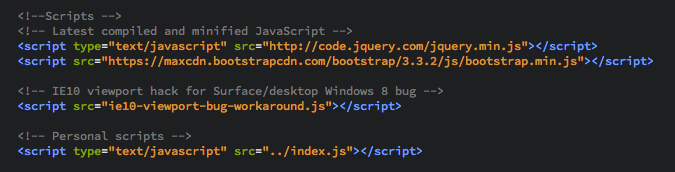

JavaScript is a client side scripting language that executes in the web browser on the client machine.
Uses:
Scripts can be added in two ways: using the <script> tag like this: <script type="text/javascript" src="script.js"></script>, or inline such like this:
<script type="text/javascript">
document.write("<h1>Hello World</h1>");
</script>
The former method is prefered as it allows reuse of the JavaScript file across different pages. Also, common functions can be shared, and shared code can be cached. It is also good practice to keep files seperate, especially usefull when it comes to altering your script across multiple pages, like in CSS.
Here is an example of external JavaScript files being referenced on this website. They are used to add functionality to the 'Top' buttons located at the bottom of most pages.
